library(tidyverse)
library(foreign)
library(janitor)
library(httr)
library(glue)
library(zip)
library(GGally)
# Suppress scientific notation in all output
options(scipen = 999)Main
Packages
Loading And Preparing the Data
# Load pre-cleaned TidyTuesday versions as a fallback reference
exped_tidy <- readr::read_csv('https://raw.githubusercontent.com/rfordatascience/tidytuesday/main/data/2025/2025-01-21/exped_tidy.csv')
peaks_tidy <- readr::read_csv('https://raw.githubusercontent.com/rfordatascience/tidytuesday/main/data/2025/2025-01-21/peaks_tidy.csv')Provided cleaning script:
################################################################################
### Cleaning data from the Himalayan Database ##################################
################################################################################
###_____________________________________________________________________________
### Utilize httr and foreign to gain access to the file and import
###_____________________________________________________________________________
# Step 1: Set up the URL and file paths
url <- "https://www.himalayandatabase.com/downloads/Himalayan%20Database.zip"
zip_file <- tempfile(fileext = ".zip")
extracted_dir <- tempfile()
# Step 2: Download and extract the ZIP file
httr::GET(url, httr::write_disk(zip_file, overwrite = TRUE))
zip::unzip(zip_file, exdir = extracted_dir)
# Step 3: Read the .DBF files
dbf_file_peaks <- file.path(extracted_dir, "HIMDATA", "peaks.DBF")
dbf_file_exped <- file.path(extracted_dir, "HIMDATA", "exped.DBF")
peaks_data <- foreign::read.dbf(dbf_file_peaks, as.is = FALSE)
exped_data <- foreign::read.dbf(dbf_file_exped, as.is = FALSE)
# Step 4: Convert to tidy tibble
peaks_temp <- tibble::as_tibble(peaks_data)
exped_temp <- tibble::as_tibble(exped_data)
# Clean up temporary files (optional)
unlink(c(zip_file, extracted_dir), recursive = TRUE)
###_____________________________________________________________________________
### Add columns that recode some variables that are integers into character
### strings that describe their subject in the peaks dataset
###_____________________________________________________________________________
peaks_tidy <- peaks_temp |>
dplyr::mutate(HIMAL_FACTOR = case_when(
HIMAL == 0 ~ "Unclassified",
HIMAL == 1 ~ "Annapurna",
HIMAL == 2 ~ "Api/Byas Risi/Guras",
HIMAL == 3 ~ "Damodar",
HIMAL == 4 ~ "Dhaulagiri",
HIMAL == 5 ~ "Ganesh/Shringi",
HIMAL == 6 ~ "Janak/Ohmi Kangri",
HIMAL == 7 ~ "Jongsang",
HIMAL == 8 ~ "Jugal",
HIMAL == 9 ~ "Kangchenjunga/Simhalila",
HIMAL == 10 ~ "Kanjiroba",
HIMAL == 11 ~ "Kanti/Palchung",
HIMAL == 12 ~ "Khumbu",
HIMAL == 13 ~ "Langtang",
HIMAL == 14 ~ "Makalu",
HIMAL == 15 ~ "Manaslu/Mansiri",
HIMAL == 16 ~ "Mukut/Mustang",
HIMAL == 17 ~ "Nalakankar/Chandi/Changla",
HIMAL == 18 ~ "Peri",
HIMAL == 19 ~ "Rolwaling",
HIMAL == 20 ~ "Saipal",
TRUE ~ "Unknown" # Default case if a value doesn't match
),
.after = HIMAL
) |>
mutate(REGION_FACTOR = case_when(
REGION == 0 ~ "Unclassified",
REGION == 1 ~ "Kangchenjunga-Janak",
REGION == 2 ~ "Khumbu-Rolwaling-Makalu",
REGION == 3 ~ "Langtang-Jugal",
REGION == 4 ~ "Manaslu-Ganesh",
REGION == 5 ~ "Annapurna-Damodar-Peri",
REGION == 6 ~ "Dhaulagiri-Mukut",
REGION == 7 ~ "Kanjiroba-Far West",
TRUE ~ "Unknown" # Default case if a value doesn't match
),
.after = REGION
) |>
mutate(PHOST_FACTOR = case_when(
PHOST == 0 ~ "Unclassified",
PHOST == 1 ~ "Nepal only",
PHOST == 2 ~ "China only",
PHOST == 3 ~ "India only",
PHOST == 4 ~ "Nepal & China",
PHOST == 5 ~ "Nepal & India",
PHOST == 6 ~ "Nepal, China & India",
TRUE ~ "Unknown" # Default case if a value doesn't match
),
.after = PHOST
) |>
mutate(PSTATUS_FACTOR = case_when(
PSTATUS == 0 ~ "Unknown",
PSTATUS == 1 ~ "Unclimbed",
PSTATUS == 2 ~ "Climbed",
TRUE ~ "Invalid" # Default case if a value doesn't match
),
.after = PSTATUS
) |>
mutate(across(c(HIMAL_FACTOR, PHOST_FACTOR, PSTATUS_FACTOR), ~ factor(.)))
###_____________________________________________________________________________
### Add columns that recode some variables that are integers into character
### strings that describe their subject in the expeditions dataset
###_____________________________________________________________________________
exped_tidy <- exped_temp |>
dplyr::mutate(SEASON_FACTOR = case_when(SEASON == 0 ~ "Unknown",
SEASON == 1 ~ "Spring",
SEASON == 2 ~ "Summer",
SEASON == 3 ~ "Autumn",
SEASON == 4 ~ "Winter",
TRUE ~ NA_character_
),
.after = SEASON
) |>
dplyr::mutate(HOST_FACTOR = case_when(HOST == 0 ~ "Unknown",
HOST == 1 ~ "Nepal",
HOST == 2 ~ "China",
HOST == 3 ~ "India",
TRUE ~ NA_character_
),
.after = HOST
) |>
dplyr::mutate(TERMREASON_FACTOR = case_when(TERMREASON == 0 ~ "Unknown",
TERMREASON == 1 ~ "Success (main peak)",
TERMREASON == 2 ~ "Success (subpeak, foresummit)",
TERMREASON == 3 ~ "Success (claimed)",
TERMREASON == 4 ~ "Bad weather (storms, high winds)",
TERMREASON == 5 ~ "Bad conditions (deep snow, avalanching, falling ice, or rock)",
TERMREASON == 6 ~ "Accident (death or serious injury)",
TERMREASON == 7 ~ "Illness, AMS, exhaustion, or frostbite",
TERMREASON == 8 ~ "Lack (or loss) of supplies, support or equipment",
TERMREASON == 9 ~ "Lack of time",
TERMREASON == 10 ~ "Route technically too difficult, lack of experience, strength, or motivation",
TERMREASON == 11 ~ "Did not reach base camp",
TERMREASON == 12 ~ "Did not attempt climb",
TERMREASON == 13 ~ "Attempt rumored",
TERMREASON == 14 ~ "Other"
),
.after = TERMREASON
) |>
filter(grepl(pattern = "202[01234]", x = YEAR))
################################################################################
### End #######################################################################
################################################################################Exploration
# Top 10 peaks by number of successful summits (TERMREASON == 1: main peak only)
success_count = exped_tidy |>
filter(TERMREASON == 1) |>
count(PEAKID) |>
arrange(desc(n)) |>
slice_head(n = 10)
ggplot(success_count, aes(x = reorder(PEAKID, n), y = n)) +
geom_bar(stat = "identity", fill = "steelblue") +
coord_flip() +
labs(title = "Top 10 Peaks by Successful Summits (2020-2024)",
x = "Peak ID", y = "# of Successful Summits")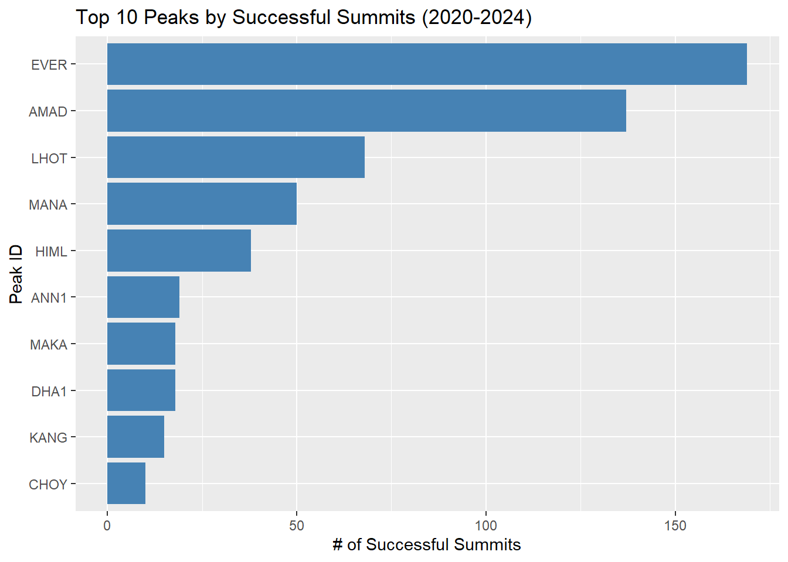
# Top 10 peak-year combinations by total attempts
# Helps show which peaks are most active and in which years
year_count = exped_tidy |>
count(PEAKID, YEAR) |>
arrange(desc(n)) |>
slice_head(n = 10)
ggplot(year_count, aes(x = interaction(PEAKID, YEAR), y = n)) +
geom_bar(stat = "identity", fill = "steelblue") +
labs(title = "Top 10 Peak-Year Combinations by Attempts",
x = "Peak ID . Year", y = "Number of Attempts") +
coord_flip()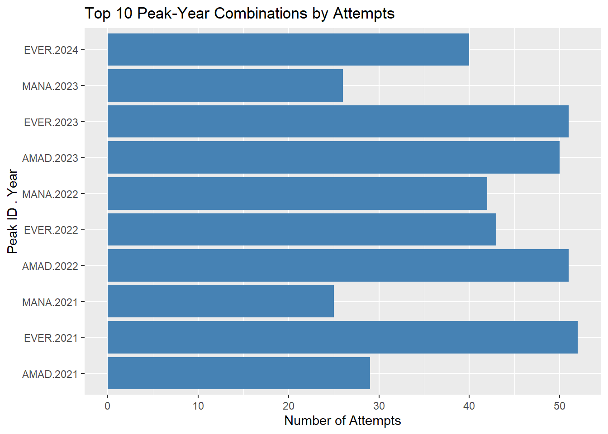
# Peaks where supplemental oxygen was most commonly used
# Oxygen use is concentrated on the highest peaks (e.g. Everest, Lhotse)
oxy_count = exped_tidy |>
filter(O2USED == TRUE) |>
count(PEAKID) |>
arrange(desc(n)) |>
slice_head(n = 10)
ggplot(oxy_count, aes(x = reorder(PEAKID, n), y = n)) +
geom_bar(stat = "identity", fill = "steelblue") +
coord_flip() +
labs(title = "Top 10 Peaks by Oxygen Usage (2020-2024)",
x = "Peak ID", y = "# of Attempts with O2 Usage")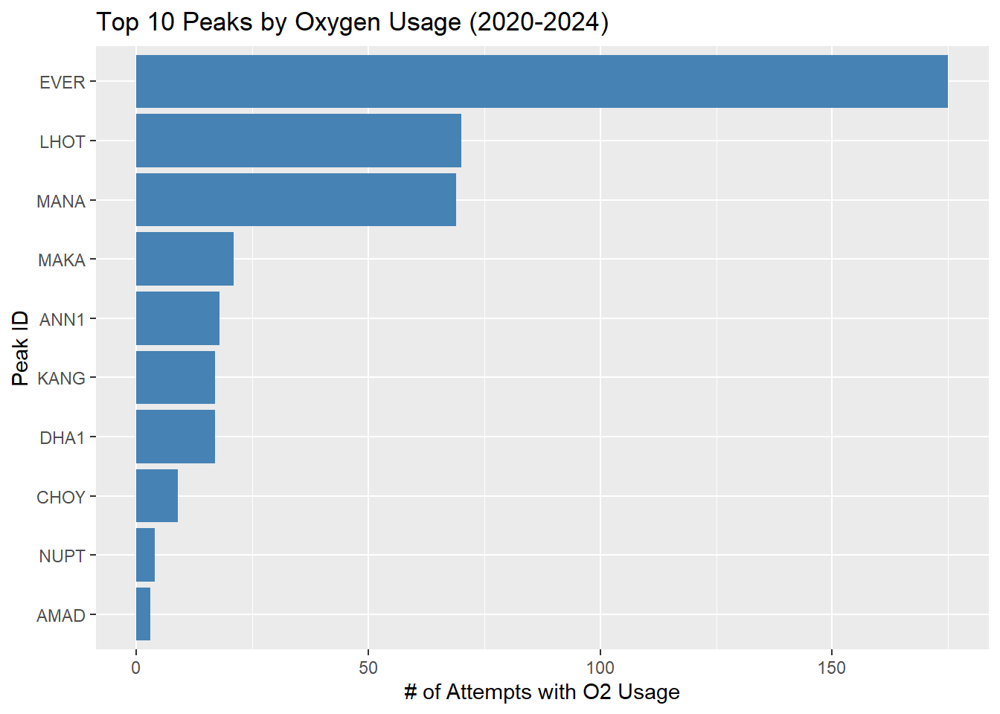
exped_tidy |>
mutate(SUCCESS = as.integer(TERMREASON %in% 1:3)) |>
group_by(SEASON_FACTOR) |>
summarise(success_rate = mean(SUCCESS), n = n()) |>
filter(!is.na(SEASON_FACTOR)) |>
mutate(color_group = ifelse(success_rate >= median(success_rate), "high", "low")) |>
ggplot(aes(x = reorder(SEASON_FACTOR, -success_rate),
y = success_rate,
fill = color_group)) +
geom_col(width = 0.6) +
scale_fill_manual(values = c("high" = "steelblue", "low" = "tomato"),
guide = "none") +
geom_text(aes(label = paste0(round(success_rate * 100, 1), "%")),
vjust = -0.5, size = 5) +
labs(title = "Success Rate by Season",
x = "Season", y = "Success Rate") +
ylim(0, 1)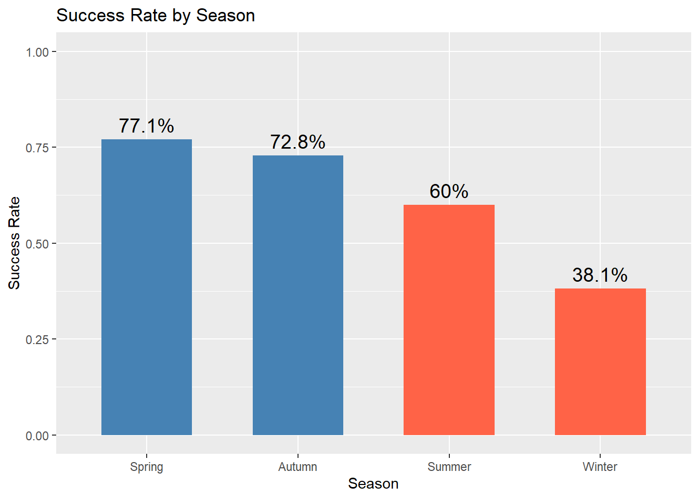
Height vs Success Rate (Exploratory)
exped_tidy |>
left_join(peaks_tidy |> select(PEAKID, HEIGHTM), by = "PEAKID") |>
mutate(SUCCESS = as.integer(TERMREASON %in% 1:3)) |>
filter(!is.na(HEIGHTM)) |>
mutate(height_bin = cut(HEIGHTM, breaks = seq(5000, 9000, by = 500),
include.lowest = TRUE)) |>
group_by(height_bin) |>
summarise(success_rate = mean(SUCCESS), n = n()) |>
filter(!is.na(height_bin)) |>
ggplot(aes(x = height_bin, y = success_rate)) +
geom_col(fill = "steelblue") +
geom_text(aes(label = paste0("n=", n)), vjust = -0.4, size = 3) +
labs(title = "Success Rate by Peak Height Band",
x = "Height (m)", y = "Success Rate") +
ylim(0, 1) +
theme(axis.text.x = element_text(angle = 45, hjust = 1))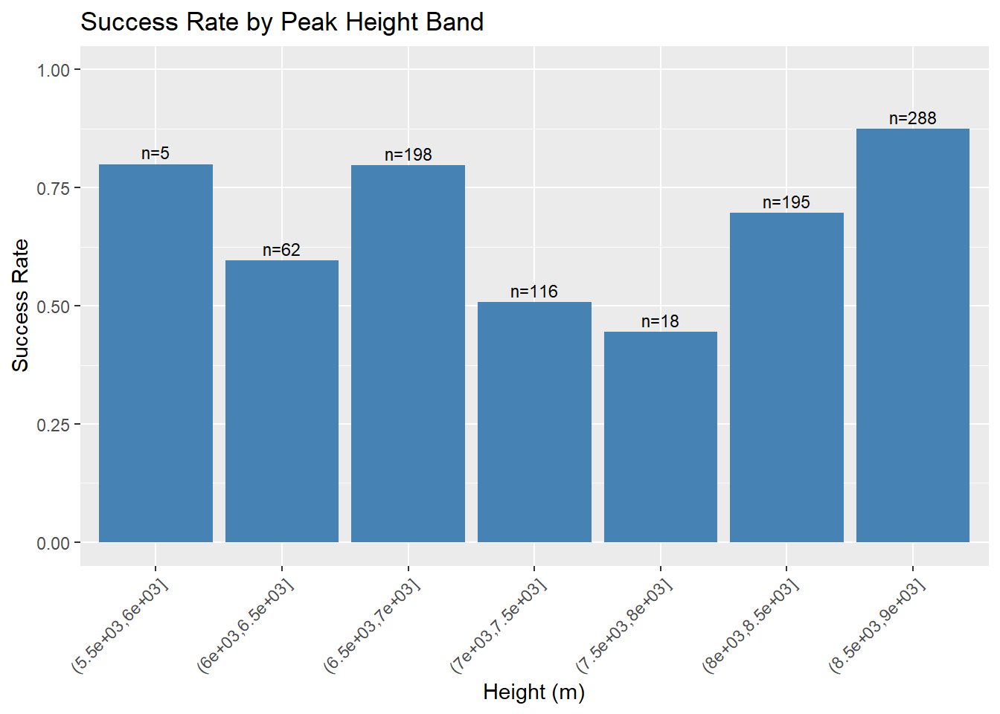
exped_tidy |>
left_join(peaks_tidy |> select(PEAKID, HEIGHTM), by = "PEAKID") |>
mutate(SUCCESS = as.integer(TERMREASON %in% 1:3)) |>
filter(!is.na(HEIGHTM)) |>
ggplot(aes(x = HEIGHTM, y = SUCCESS)) +
geom_smooth(method = "loess", color = "steelblue", se = TRUE) +
labs(title = "LOESS Smooth: Success vs Peak Height",
x = "Peak Height (m)", y = "Predicted Success Rate")`geom_smooth()` using formula = 'y ~ x'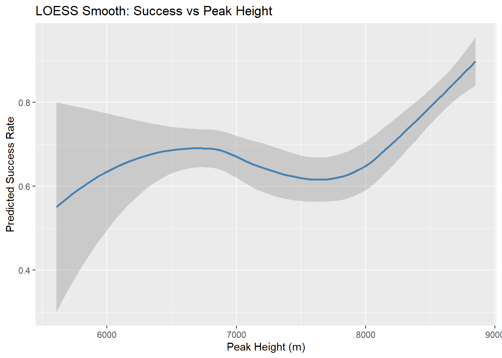
Model Fitting
# Build model dataset:
# - SUCCESS: 1 if any form of summit success (TERMREASON 1, 2, or 3), 0 otherwise
# - Join in peak height from peaks_tidy
exped_model = exped_tidy |>
mutate(SUCCESS = as.integer(TERMREASON %in% 1:3)) |>
subset(select = c(PEAKID, SUCCESS, TERMREASON, O2USED, SEASON_FACTOR, CAMPS, TOTMEMBERS))
temp = subset.data.frame(peaks_tidy, select = c(PEAKID, HEIGHTM))
exped_model = left_join(exped_model, temp, by = "PEAKID") |>
mutate(HEIGHTM_KM = HEIGHTM / 1000,
HEIGHTM_KM_C = HEIGHTM_KM - mean(HEIGHTM_KM, na.rm = TRUE))
# Logistic regression: predicting binary summit success
# O2USED * HEIGHTM_KM includes both main effects AND interaction term
# Interaction tests whether oxygen benefit grows with altitude (central hypothesis)
model = glm(SUCCESS ~ O2USED * HEIGHTM_KM_C + I(HEIGHTM_KM_C^2) + SEASON_FACTOR + CAMPS + TOTMEMBERS,
data = exped_model, family = "binomial")
summary(model)
Call:
glm(formula = SUCCESS ~ O2USED * HEIGHTM_KM_C + I(HEIGHTM_KM_C^2) +
SEASON_FACTOR + CAMPS + TOTMEMBERS, family = "binomial",
data = exped_model)
Coefficients:
Estimate Std. Error z value Pr(>|z|)
(Intercept) -2.19355 0.31984 -6.858 0.000000000006965 ***
O2USEDTRUE 2.67621 0.44516 6.012 0.000000001834651 ***
HEIGHTM_KM_C -2.42907 0.33901 -7.165 0.000000000000777 ***
I(HEIGHTM_KM_C^2) -0.63766 0.23121 -2.758 0.00582 **
SEASON_FACTORSpring -0.53561 0.23568 -2.273 0.02305 *
SEASON_FACTORSummer -0.02875 0.97033 -0.030 0.97636
SEASON_FACTORWinter -0.12711 0.57611 -0.221 0.82537
CAMPS 0.56828 0.08854 6.418 0.000000000137904 ***
TOTMEMBERS 0.09545 0.02100 4.546 0.000005474569446 ***
O2USEDTRUE:HEIGHTM_KM_C 3.32676 0.64865 5.129 0.000000291684964 ***
---
Signif. codes: 0 '***' 0.001 '**' 0.01 '*' 0.05 '.' 0.1 ' ' 1
(Dispersion parameter for binomial family taken to be 1)
Null deviance: 1008.10 on 881 degrees of freedom
Residual deviance: 635.65 on 872 degrees of freedom
AIC: 655.65
Number of Fisher Scoring iterations: 6# Summary stats by oxygen use — useful context for the presentation
# Shows success rate and average peak height for O2 vs non-O2 expeditions
exped_model |>
group_by(O2USED) |>
summarise(
n = n(),
success_rate = round(mean(SUCCESS), 3),
avg_height = round(mean(HEIGHTM_KM, na.rm = TRUE), 3)
)# A tibble: 2 × 4
O2USED n success_rate avg_height
<lgl> <int> <dbl> <dbl>
1 FALSE 473 0.567 7.11
2 TRUE 409 0.944 8.52exped_model |>
group_by(O2USED) |>
summarise(success_rate = mean(SUCCESS), n = n()) |>
mutate(O2_label = ifelse(O2USED == TRUE, "O2 Used", "No O2")) |>
ggplot(aes(x = O2_label, y = success_rate)) +
geom_col(width = 0.4, fill = c("steelblue", "tomato")) +
geom_text(aes(label = paste0(round(success_rate * 100, 1), "%")),
vjust = -0.5, size = 5) +
labs(title = "Success Rate by Oxygen Use",
x = "Oxygen Use", y = "Success Rate") +
ylim(0, 1)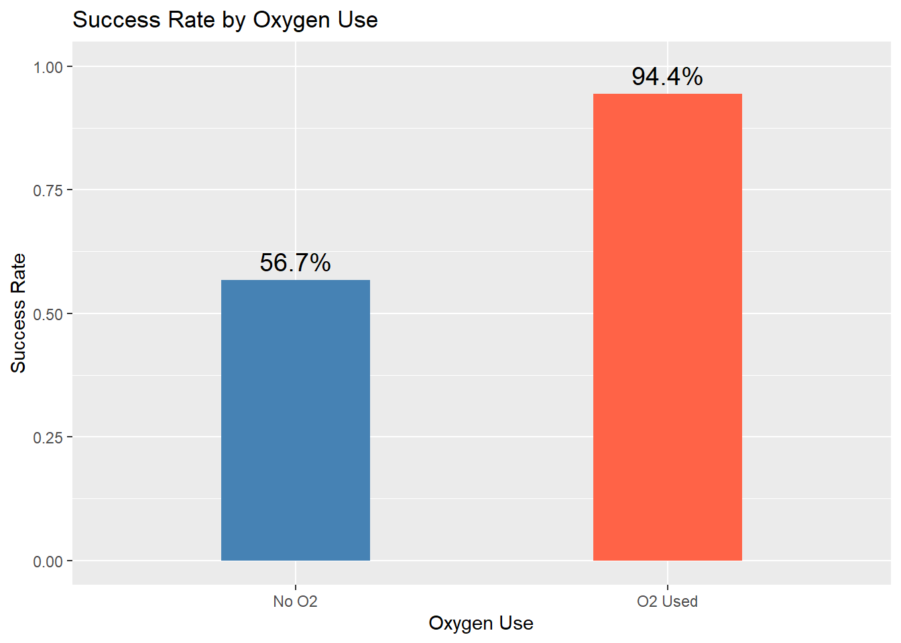
Interaction Term Justification
# Additive model: polynomial height but no O2USED:HEIGHTM_KM interaction
model_additive <- glm(SUCCESS ~ O2USED + HEIGHTM_KM_C + I(HEIGHTM_KM_C^2) + SEASON_FACTOR + CAMPS + TOTMEMBERS,
data = exped_model, family = "binomial")
# Likelihood ratio test: does adding the interaction significantly improve fit?
anova(model_additive, model, test = "Chisq")Analysis of Deviance Table
Model 1: SUCCESS ~ O2USED + HEIGHTM_KM_C + I(HEIGHTM_KM_C^2) + SEASON_FACTOR +
CAMPS + TOTMEMBERS
Model 2: SUCCESS ~ O2USED * HEIGHTM_KM_C + I(HEIGHTM_KM_C^2) + SEASON_FACTOR +
CAMPS + TOTMEMBERS
Resid. Df Resid. Dev Df Deviance Pr(>Chi)
1 873 656.58
2 872 635.65 1 20.93 0.000004763 ***
---
Signif. codes: 0 '***' 0.001 '**' 0.01 '*' 0.05 '.' 0.1 ' ' 1# AIC comparison: lower AIC = better fit penalized for model complexity
AIC(model_additive, model) df AIC
model_additive 9 674.5801
model 10 655.6499Diagnostics
# Type II ANOVA with Chi-square test — shows which predictors significantly
# reduce deviance. More appropriate than default anova() for logistic regression.
anova(model, test = "Chisq")Analysis of Deviance Table
Model: binomial, link: logit
Response: SUCCESS
Terms added sequentially (first to last)
Df Deviance Resid. Df Resid. Dev Pr(>Chi)
NULL 881 1008.10
O2USED 1 183.720 880 824.38 < 0.00000000000000022 ***
HEIGHTM_KM_C 1 73.888 879 750.49 < 0.00000000000000022 ***
I(HEIGHTM_KM_C^2) 1 2.111 878 748.38 0.14627
SEASON_FACTOR 3 10.169 875 738.21 0.01718 *
CAMPS 1 56.598 874 681.61 0.00000000000005346 ***
TOTMEMBERS 1 25.034 873 656.58 0.00000056317345505 ***
O2USED:HEIGHTM_KM_C 1 20.930 872 635.65 0.00000476331325939 ***
---
Signif. codes: 0 '***' 0.001 '**' 0.01 '*' 0.05 '.' 0.1 ' ' 1Residual diagnostics help check whether the fitted probabilities leave any clear structure unexplained. For a logistic regression, the residuals do not need to look normally distributed, but they should be centered around zero without a strong trend across fitted probabilities.
resid_diag = exped_model |>
mutate(
fitted_prob = fitted(model),
deviance_resid = residuals(model, type = "deviance"),
pearson_resid = residuals(model, type = "pearson")
)
ggplot(resid_diag, aes(x = fitted_prob, y = deviance_resid)) +
geom_hline(yintercept = 0, linetype = "dashed", color = "gray40") +
geom_point(alpha = 0.35, color = "steelblue") +
geom_smooth(method = "loess", se = FALSE, color = "tomato", linewidth = 1) +
labs(
title = "Deviance Residuals vs Fitted Probabilities",
x = "Fitted probability of summit success",
y = "Deviance residual"
)`geom_smooth()` using formula = 'y ~ x'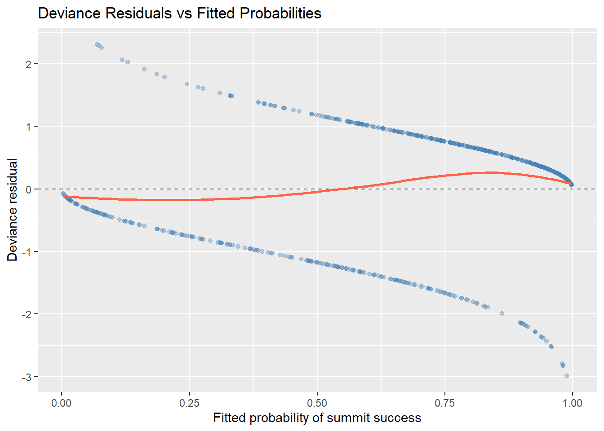
resid_diag |>
mutate(prob_decile = ntile(fitted_prob, 10)) |>
group_by(prob_decile) |>
summarise(
mean_fitted = mean(fitted_prob),
mean_pearson_resid = mean(pearson_resid),
n = n(),
.groups = "drop"
) |>
ggplot(aes(x = mean_fitted, y = mean_pearson_resid)) +
geom_hline(yintercept = 0, linetype = "dashed", color = "gray40") +
geom_line(color = "steelblue") +
geom_point(aes(size = n), color = "steelblue") +
guides(size = "none") +
labs(
title = "Binned Pearson Residuals",
x = "Average fitted probability by decile",
y = "Average Pearson residual"
)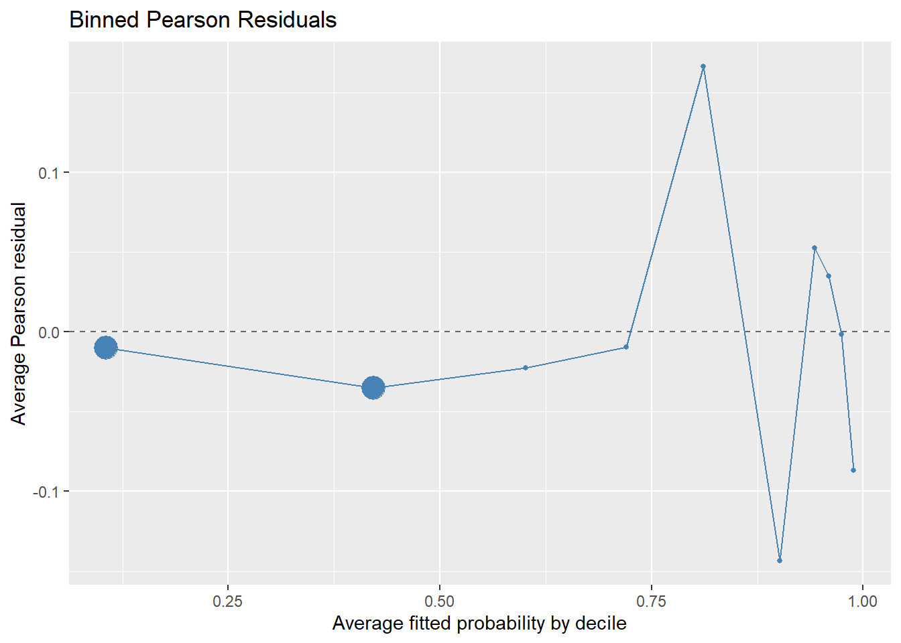
The residual plots are mostly centered around zero, which suggests that the model captures the main success-probability pattern. There is some remaining structure in the middle fitted-probability range, so unmeasured factors such as route difficulty, short-term weather, expedition support, and climber experience may still explain part of the outcome.
# Pairwise relationship plot for numeric predictors and O2USED
# Helps check for collinearity and visualize predictor distributions
temp = subset.data.frame(exped_model, select = c(O2USED, CAMPS, TOTMEMBERS, HEIGHTM_KM))
ggpairs(temp)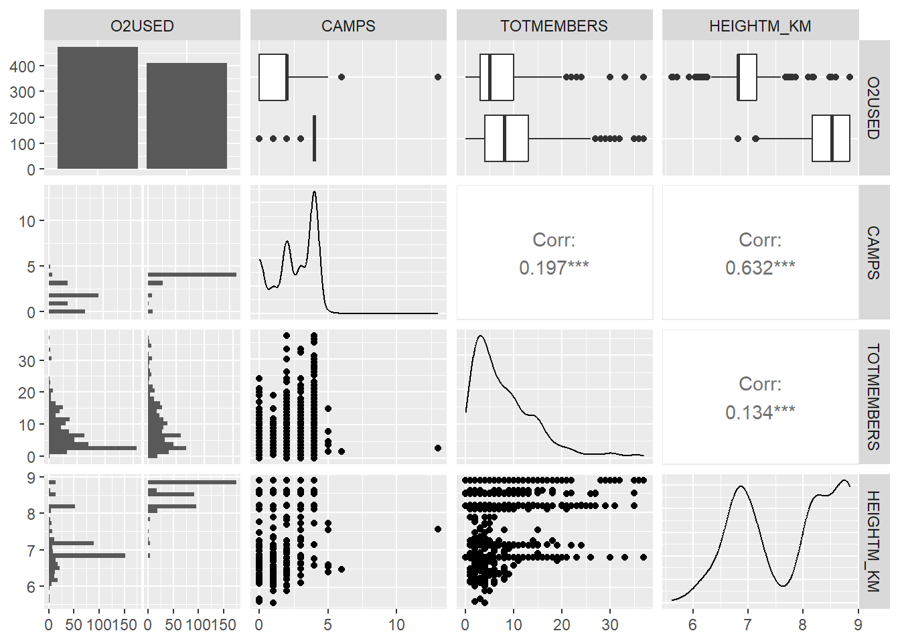
exped_model |>
mutate(SUCCESS = factor(SUCCESS, labels = c("Failure", "Success"))) |>
ggparcoord(
columns = which(colnames(exped_model) %in% c("CAMPS", "TOTMEMBERS", "HEIGHTM_KM")),
groupColumn = which(colnames(
mutate(exped_model, SUCCESS = factor(SUCCESS))) == "SUCCESS"),
alphaLines = 0.3,
scale = "uniminmax" # scales each variable to 0-1 so axes are comparable
) +
scale_color_manual(values = c("Failure" = "tomato", "Success" = "steelblue")) +
labs(title = "Parallel Coordinates: Success vs Key Predictors",
color = "Outcome", y = "Scaled Value")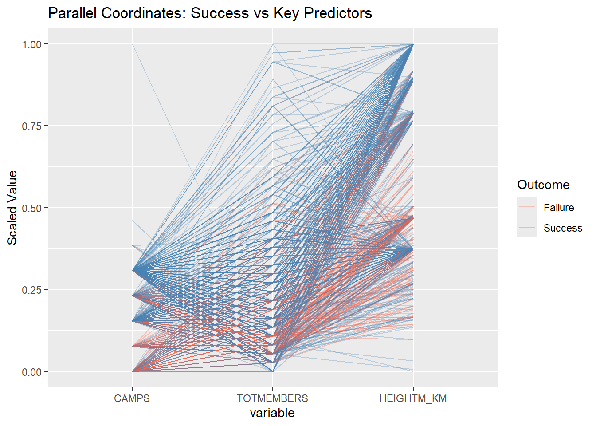
# Odds Ratio table with 95% confidence intervals
# OR > 1: increases odds of success; OR < 1: decreases odds
# NOTE: AUTUMN is the baseline season — all season ORs are relative to Autumn
# An OR confidence interval that does not cross 1 is statistically significant
round(exp(cbind(OR = coef(model), confint(model))), 3)Waiting for profiling to be done... OR 2.5 % 97.5 %
(Intercept) 0.112 0.059 0.206
O2USEDTRUE 14.530 6.335 37.138
HEIGHTM_KM_C 0.088 0.044 0.165
I(HEIGHTM_KM_C^2) 0.529 0.333 0.828
SEASON_FACTORSpring 0.585 0.368 0.929
SEASON_FACTORSummer 0.972 0.145 8.029
SEASON_FACTORWinter 0.881 0.278 2.723
CAMPS 1.765 1.487 2.104
TOTMEMBERS 1.100 1.057 1.148
O2USEDTRUE:HEIGHTM_KM_C 27.848 7.485 98.799Poly Test
# Linear model (no polynomial) as baseline for comparison
model_linear = glm(SUCCESS ~ O2USED * HEIGHTM_KM_C + SEASON_FACTOR + CAMPS + TOTMEMBERS,
family = "binomial", data = exped_model)
# LRT: significant p-value confirms quadratic term improves fit
anova(model_linear, model, test = "Chisq")Analysis of Deviance Table
Model 1: SUCCESS ~ O2USED * HEIGHTM_KM_C + SEASON_FACTOR + CAMPS + TOTMEMBERS
Model 2: SUCCESS ~ O2USED * HEIGHTM_KM_C + I(HEIGHTM_KM_C^2) + SEASON_FACTOR +
CAMPS + TOTMEMBERS
Resid. Df Resid. Dev Df Deviance Pr(>Chi)
1 873 643.43
2 872 635.65 1 7.7843 0.00527 **
---
Signif. codes: 0 '***' 0.001 '**' 0.01 '*' 0.05 '.' 0.1 ' ' 1# AIC: polynomial model should score lower
AIC(model_linear, model) df AIC
model_linear 9 661.4342
model 10 655.6499Interaction Visualization
# Create a prediction grid across the full range of peak heights
# Hold all other variables at their mean/reference level to isolate the interaction
# This shows how the O2 benefit changes as altitude increases
pred_grid = expand.grid(
HEIGHTM_KM_C = seq(5.4, 8.85, by = 0.05) - mean(exped_model$HEIGHTM_KM, na.rm = TRUE),
O2USED = c(TRUE, FALSE),
SEASON_FACTOR = "Autumn", # reference level
CAMPS = mean(exped_model$CAMPS, na.rm = TRUE),
TOTMEMBERS = mean(exped_model$TOTMEMBERS, na.rm = TRUE)
)
pred_grid$HEIGHTM_KM = pred_grid$HEIGHTM_KM_C + mean(exped_model$HEIGHTM_KM, na.rm = TRUE)
pred_grid$prob = predict(model, newdata = pred_grid, type = "response")
ggplot(pred_grid, aes(x = HEIGHTM_KM, y = prob, color = factor(O2USED))) +
geom_line(size = 1.2) +
scale_color_manual(values = c("FALSE" = "tomato", "TRUE" = "steelblue"),
labels = c("No O2", "O2 Used")) +
labs(title = "Predicted Summit Success Probability by Height and O2 Use",
x = "Peak Height (km)",
y = "Predicted Probability of Success",
color = "Oxygen")Warning: Using `size` aesthetic for lines was deprecated in ggplot2 3.4.0.
ℹ Please use `linewidth` instead.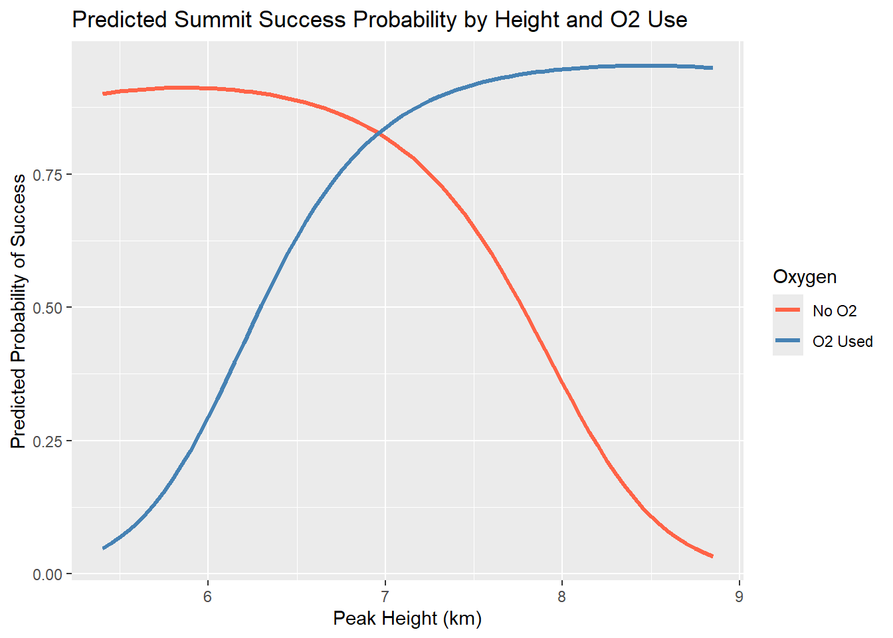